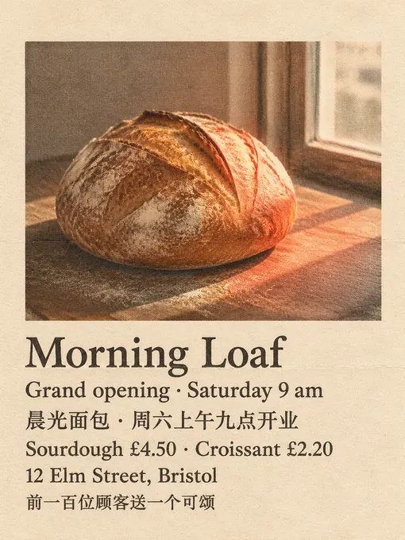
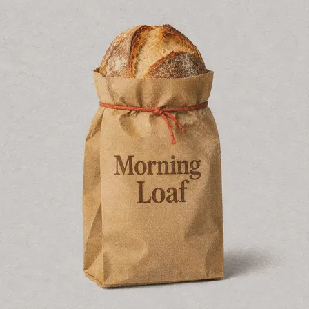
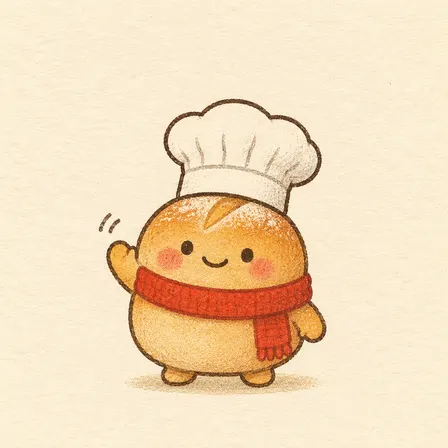
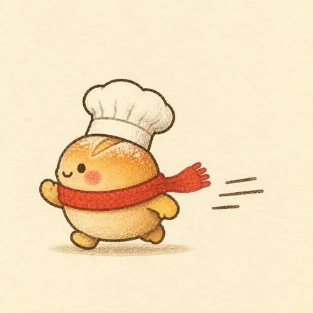
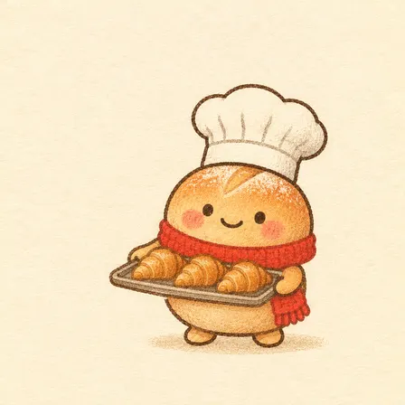
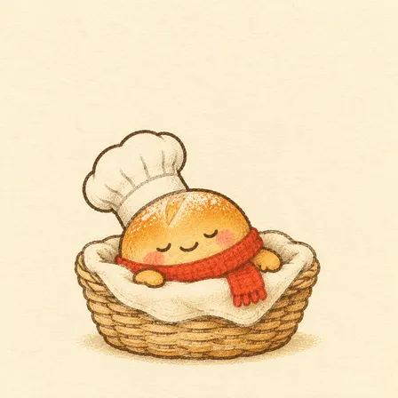

jiahuiqu17/paper-signal: image test, 2026-11-08
The same brief for every skill: a 3:4 poster for a made-up bakery with six exact lines of English and Chinese text, a square photo of a kraft-paper bag printed with the shop's name, and four square pictures of one mascot in four poses. Claude Code (Claude Opus 5.5) made them with the skill in a throwaway sandbox; every image call went to the newest model of the family the skill asked for (GPT Image 2.6, Nano Banana 2.1 or FLUX 3). 4.3 minutes; 7 image calls ($0.059), drawn by gpt-image-2.6-ext. All results · The brief · How it is scored
Result
Followed the brief
The pictures












The text, read letter by letter
Read by OCR (macOS Vision, five passes); a line OCR could not find as written was looked at by hand.
| Asked for | Written |
|---|---|
| Morning Loaf | right |
| Grand opening · Saturday 9 am | right |
| 晨光面包 · 周六上午九点开业 | right |
| Sourdough £4.50 · Croissant £2.20 | right |
| 12 Elm Street, Bristol | right |
| 前一百位顾客送一个可颂 | right |
| Morning Loaf (on the bag) | right |
The mascots (judged by a vision model)
| Same character in all four (1-5) | 5 |
|---|---|
| Poses as asked (of 4) | 4 |
| Chef's hat and red scarf in all four | yes |
| Text on them | no |
The judge's note: All four clearly show the same bun mascot with matching shape, colors, face, chef's hat, and red scarf in the requested poses.
How it went (the session's closing message)
I made all six pictures with the paper-signal skill and saved them to `~/work/output/` with the names in the brief. The skill's own check script still reports 5 errors: it allows only one aspect ratio per project, so it flags the five square images against the poster's 3:4. Those five are square because the brief asks for 1:1. The script also gave 3 warnings: prompts 1–3 describe the paper as a "flat scan of … paper", which doesn't match its exact keyword list. I looked at every image myself, but I left the project marked "rendered", not "validated", because the script didn't pass. **Approach:** I followed the skill's workflow for a six-image set. All six share the same look: a warm off-white paper scan with a two-colour print texture, and tomato red as the only bright colour. The red comes from Bun's scarf; on the poster it is the patch of morning light, and on the bag it is a string tie. The skill expects Codex's built-in image generator, which isn't on this machine. So I sent the skill's saved prompts unchanged to OpenAI's image API, at high quality. | File | What it shows | |---|---| | `poster.png` (3:4, 768×1024) | A sourdough loaf on a board in sunlight from a window. I checked all six text lines letter by letter: spelling, the `·` separators, the `£` signs and both Chinese lines are exactly right, with no other text. | | `product.png` (1:1) | A kraft bag standing on light grey, with a sourdough loaf at the top and "Morning Loaf" in dark brown. The first attempt looked like a clean product photo, which the skill counts as a failure. The skill's single correction gave a version that looks printed on paper, and that's the one I used. | | `mascot-1.png` | Bun from the front, waving. This image was then given to the model as the reference for the other three. | | `mascot-2.png` | Bun in side view, running to the left, with speed lines and the scarf trailing behind. | | `mascot-3.png` | Bun holding a tray of exactly three croissants. | | `mascot-4.png` | Bun asleep in a wicker basket lined with cloth, with no "zzz" letters. | All four mascot pictures show the same character: a round golden roll with a score mark on top, dot eyes, pink cheeks, a white chef's hat and a red knitted scarf. None of them has any text. **What the skill couldn't fully match:** its style is muted and printed, so the "soft studio light" on the bag is a softly lit grey paper background rather than a glossy photo-studio look. Prompts, the first bag attempt and the manifest are in `~/work/morning-loaf-opening/`. DELIVERABLE: ~/work/output/